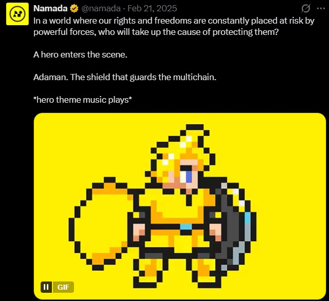
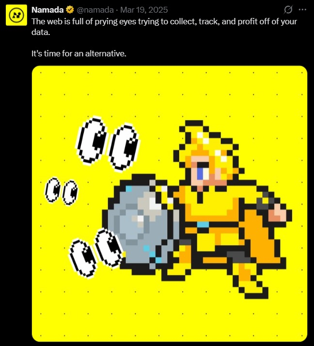
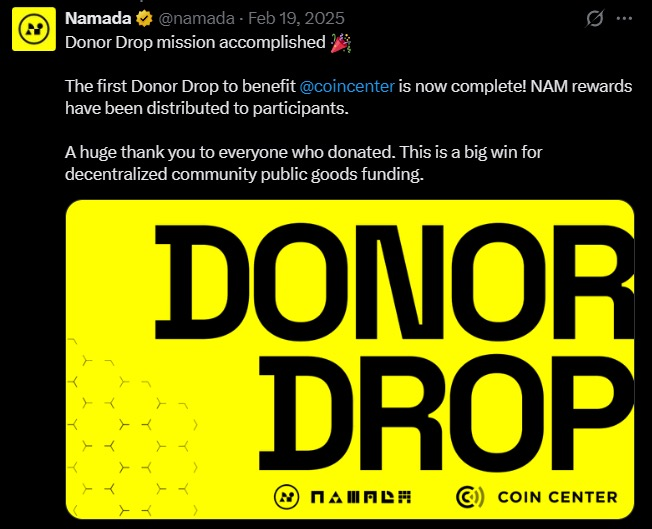

Case study — Namada
Giving a privacy protocol a face.
Namada's technology is complex: zero-knowledge proofs, multi-asset shielded liquidity pools, and private transfers. We needed a softer approach to get people in the door, then learn about the importance of privacy.
We partnered with Namada to create a brand mascot and simplify complex privacy technology, shifting the brand toward a more approachable identity through multimedia content and community engagement.
Make people care about the story first. The cryptography can wait.
The mascot's story kept unfolding from there — giving the hero a name, turning "the web tracks your data" into a scene he could physically fight, and celebrating the community wins along the way.

The hero gets a name: Adaman, "the shield that guards the multichain."

"The web tracks your data" becomes a scene the mascot can fight.

A community fundraiser with Coin Center, turned into its own celebrated moment.